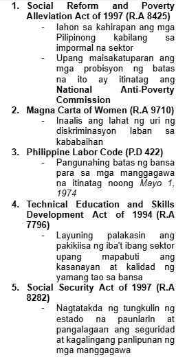
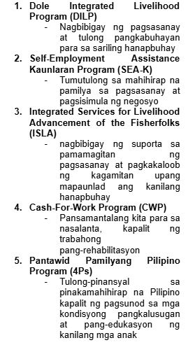

IMPORMAL NA SEKTOR
Sektor ng ekonomiya na walang pormal o salat sa mga dokumentong kailangan sa pagsasagawa ng gawaing pang-ekonomiya
Ang kita ng sektor na ito ay HINDI naisasama sa kabuuang Gross Domestic Product (GDP) ng bansa
Paraan ng mamamayan upang magkaroon ng kabuhayan/dagdag kita sa tuwing panahon ng pangangailangan
Ito ay nagdudulot rin ng pagkakalikha ng mga produkto at serbisyong tutugon sa ating mga pangangailangan
Kilala rin sa tawag na Underground Economy
IBA’T IBANG ANYO NG IMPORMAL NA SEKTOR
- Mga gawaing maaaring isakatuparan lamang sa loob ng tahanan
- Mga gawaing pansibiko, pagkakawanggawa, at panrelihiyon
- Mga sari-sari stores, pagtitinda sa labas ng bahay o sidewalk, paglalako ng kalakal o serbisyo
- Ilegal na gawain tulad ng pagnanakaw, pagbebenta ng ilegal na gamot, piracy, at prostitusyon
KATANGIAN NG IMPORMAL NA SEKTOR
Hindi nakarehistro sa pamahalaan
Hindi nagbabayad ng buwis mula sa kinita
Walang legal at pormal na balangkas mula sa pamahalaan para sa pagnenegosyo
KAHALAGAHAN NG IMPORMAL NA SEKTOR
- Sinasalo nito ang mga mamamayan na hindi makapasok bilang mga regular na empleyado sa isang kompanya.
- Nagbibigay ng pagkakataon sa maraming Pilipino na makapaghanapbuhay
- Nagsisilbing tagasalo ng mga mamamayang may mahigpit na pangangailangan
- Malaki ang naitutulong sa mga konsyumer ang mga kalakal at serbisyong mula sa impormal na sektor dahil sa MURA nitong halaga
DAHILAN KUNG BAKIT PUMAPASOK SA IMPORMAL NA SEKTOR ANG MGA MAMAMAYAN
- Makaligtas sa pagbabayad ng buwis sa pamahalaan
- Makaiwas sa masyadong mahaba at masalimuot na proseso ng pakikipagtransaksyon sa pamahalaan (bureaucratic red tape)
- Kawalan ng regulasyon mula sa pamahalaan na kung saan ang mga batas at programa ay hindi naitutupad nang maayos
- Makapaghanapbuhay nang hindi nangangailangan ng malaking kapital o puhunan
- Malabanan ang matinding kahirapan
MGA BATAS, PROGRAMA, AT PATAKARANG PANG-EKONOMIYA SA IMPORMAL NA SEKTOR

MGA PROGRAMA PARA SA MAMAMAYAN
